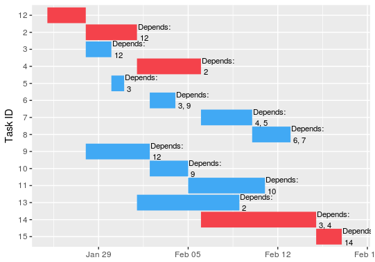
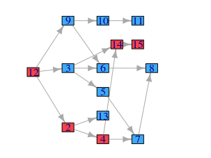
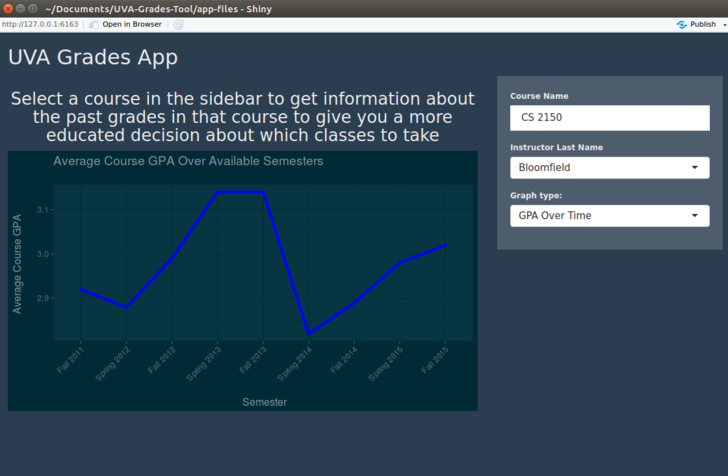
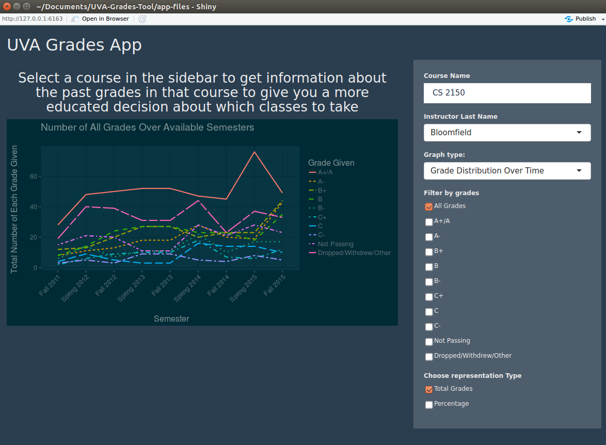
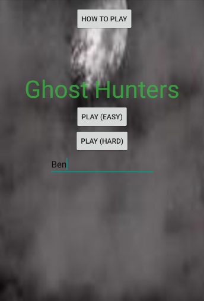
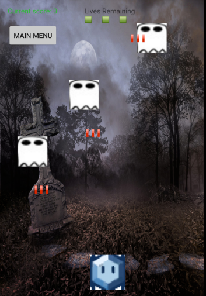

Software Developer
Background and Interests
This page explores my background as a software developer. I first came into software development/computer science in high school after realizing that medicine is not the career I wanted to pursue and scrambling to find out what actual did interest me. After watching Skyfall, where computers do some pretty absurd things, I decided to find out what computers could actually do. One Harvard online introduction to CS class later I was hooked. Currently, I have a B.A in CS from UVA and although my current studies are in data science, the coding aspect of it all remains one of my favorites and I hope to pursue a career that indulges both my computer science and data science backgrounds.
Skills
Skills are an interesting thing when they appear on a resume or LinkedIn because listing skills without context is almost just listing programming languages you have seen at some point before. I am guilty of this practice but context is still crucial, so here it is. Because my Master's program is in Data Science, my day to day work is done in Python and R, with a relatively even split between the two. With R, I have used the Shiny framework for web apps in a personal project (see, UVA Grades App), and the Rcpp package for C++ integration with R (see, projmanr). For Python, I have used the Django web development framework (see, Secure File Share). Java is my next strongest language as I have TAed a course using it for about 2 years. Java was also the second language I learned, so I have been exposed to it for about 4 years now. As an extension of Java, I have done some Android development (see, Ghost Hunter). I have internship experience in C#/.NET, where I reached a high enough level of competency to build an app (see, Machine Learning Work Experience on the data science page). C++ is the first language I learned. Further, I have coursework in C++ and, as stated, have used it in an R project. Like every developer ever, I have experience with the web stack (HTML, CSS, and PHP. Some Javascript but not much). I have also seen Scala and C but these are not skills I claim any sort of proficiency on. Although I am not able to devote as much time as I would like to learning new languages at the moment, the languages I hope to gain more exposure to in the future are Scala and Julia.
I have grown up on Window's operating systems, however, since coming to college I have always dual booted Windows and various flavors of Linux, primarily Ubuntu and Mint. Unless required by a job, I don't see my OS setup ever changing. In terms of development environments, I tend to just choose the best tool for the job. Currently, my go-to setup is VS Code with Vim keybindings and integrated Powershell (or terminal if I'm on Linux).
Coursework
These are all the courses I have ever taken, including high school, pertaining to computer science.
| Course Number | Course Name | Grade | Additional Info/Main Technologies Used |
|---|---|---|---|
| CS 4750 | Database Systems | A+ | MySQL |
| CS 4740 | Cloud Computing | A | Python, Amazon Web Services |
| CS 4753 | Electronic Commerce Technologies | A | HTML, CSS |
| CS 3330 | Computer Architecture | A- | A custom hardware language, C |
| CS 3240 | Advanced Software Development | A | Python, Django, Postgres, Heroku, covered encryption |
| ECE 2330 | Digital Logic Design | A | |
| CS 4102 | Algorithms | A- | Latex |
| CS 3205 | HCI in Software Development | A- | |
| CS 2150 | Program and Data Representation | A | C++ |
| CS 2110 | Software Development Methods | A+ | Java, Android, Have TAed the course for 4 semesters |
| CS 2102 | Discrete Mathematics 1 | A- | |
| CS 2102 | Discrete Mathematics 1 | A- | |
| CS 1110 | Introduction to Programming | A | Java |
| AP Computer Science | 4 on the AP Exam | C++, Java |
Projects
Now to share a few of the projects that I have worked on pertaining to software development.
projmanr
In a lot of ways, this is my most substantial project and the one I am most proud of, even though it is still largely in its infancy. This project all started because I opted out of a summer programming class for my Master's program and needed to do an independent study. Someone had a connection in UVA's Darden School of Business with a professor who had an idea for an R package and needed a developer to help bring it to fruition. I thought this would be a good chance to sharpen my R skills and actually publish some code that I had written. After only a few meetings, we had a pretty good idea of what the package should do and a timeframe to get it published. The package should replicate some basic feature of Microsoft Project, namely the ability to calculate the critical path for a series of tasks and plot a Gantt chart. The app was to be developed and published to CRAN by the end of the summer session which was about 3 weeks.
The coding of the logic was actually the easiest part. The algorithm for critical path is pretty straightforward. As far as the Gantt chart, people had already written code that was roughly what we had in mind, so starting with that code and editing it to our specifications also was not too difficult. The trickiest two parts were figuring out how to store the data, and jumping through all of the hoops needed to publish an R package.
The big issue with data representation was that R is overall pretty clunky in terms of object-oriented programming. This problem is one that fits very naturally into the OO paradigm (you have a collection of 'Task' objects that interact with one another). In the end, I found a package in R called R6 that I found to be the most natural implementation of classes in R, although it still paled in comparison to a Java-like language. In terms of the publishing, a lot of it just came to following the guidance of R-guru Hadley Wickham as closely. Overall, it was a painless experience and we got accepted on our third try. One rather amusing roadblock was when on our second try, the package got rejected because the reviewer disliked my choice of adjective in the project the description.
I also got the chance to feel (yes, feel) first-hand the importance of writing good tests. I will not soon forget the rush of embarrassment that overcame me when only a few days after release, I got an email from a user pointing out a pretty rudimentary bug that blocked a simple, but overall quite an important feature of the package. The bug was due to a line of code used during debugging of another issue that had not been removed. Mortified, I fixed the bug instantly and wrote a plethora of new tests to avoid any such error in the future. Further, even though the bug was fixed on Github in a matter of days, because of the way CRAN works, only accepting updates with pretty big changes, the bug still exists in the official release to this day.
Our next steps in the project are to add in the ability to simulate project duration based on uncertainty in the duration of individual tasks. Since R is notoriously slow for things like simulations, we are taking advantage of the Rcpp package, to integrate C++ and R, giving me the change to brush up on my C++ skills. We are also hoping to add more developers with myself as lead dev, giving me even more opportunity to work on my leadership skills in a technical context.
Secure File Share
This was a semester project for CS 3240: Advanced Software Development Methods. The goal of the site was to create a Dropbox-esque site where users could securely store their files (read, encryption) and send encrypted messages to other users. While this project was just a class assignment, I feel it belongs on this list for a couple of reasons:- This was the group assignment for school that was too large to reasonably be written by one person. For many group projects I had done in the past, the actual coding could pretty easily be done by one person, almost always me, and for this reason we were able to successfully circumvent having to actually learn to code as a group, which was usually the point of the assignment. For this project, there were simply too many moving parts for this to work. So we tore off the Band-Aid and learned how to code as a group and let me tell you, for something that seems like a pretty intuitive soft skill, there is ALOT to learn here. Accountability shoots through the roof. Often times, features depend on each other. So if you aren't able to complete your feature then you make not only yourself look bad but you also make the person who put a lot of work into a feature that now doesn't work look bad too. Also, you can't really get away with using git badly anymore. For example, before this, there had never been a compelling reason to use a .gitignore file for any project that I had done. I learned the hard way why these little guys exist. For much of the project, local database files were being tracked globally by git, leading to gargantuan merge conflicts that often were resolved by just clearing the local database completely. Having a database wiped 2 days before a presentation is a great way to make sure lessons stick.
- It was a good demonstration of my ability to learn and do so quickly. This project was developed using the Django web framework, which was not taught at all as part of the course curriculum. Students were required to teach themselves the framework, and do so quickly. Through a mixture of Django's extremely thorough documentation, Youtube videos, and a good bit of messing around, I was able to get from nothing to practically effective in about a week.
- It tied in many important concepts in CS and was the first project I had done that really did. We had to think about managing users, hosting files, maintaining a backend database (done in Postgres), creating a good looking front end (done using Django's templating language with a little help from Bootstrap), worrying about security (done through public/private key encryption and front end checks), and deploying a website (done on Heroku)
UVA Grades App
This project is really the first personal project that I worked on. Midway through my second year in undergrad, I found out that students could access grade data from the University through the Freedom of Information Act. Indeed, with the completion of a single form, I was emailed 10 CSV files containing exactly what grades had been given out in every undergraduate class for the past 5 years (as in, each row had class, professor name, section number, how many A's were given, how many B's, how many students dropped, GPA, etc.). I found this information incredibly cool and potentially quite useful to other students, so I decided to try and create a nice interface for this data. Some enterprising UVA students had already found great success create an app to help students schedule classes at UVA so the market for such student-created apps was definitely there.
Two challenges immediately presented themselves. The first pertained to what technology to select for such a task as I had no experience hosting web apps and was overwhelmed by the number of different options available. I had really been itching to learn R, so I ended up choosing to develop in R using the Shiny framework for developing web apps. This also allowed me to use ggplot, the visualization library in R to show users graphs of the data. The second issue was that I've always had a minor weak spot when it comes to designing aesthetically pleasing, highly user-friendly apps. I acknowledge how important these aspects of an app are, but I generally prefer to focus on functionality, thus I enlisted the help of a friend in the UVA McIntire School of Commerce with an eye for design to help me out. I would be the developer and she the designer.
With preliminary issues resolved, we dove into development. No surprise here, but a plethora of new issues quickly presented themselves after we started development. Firstly, how do we consolidate the 10 or so different CSVs into a single amalgamation of data that can be used by the program? I decided to write a separate script that performed this task once so that the program did not have to merge the CSV files every time it ran. Next, was how to deal with professors who taught more than one section of the same class within the semester? This led to more that one row in the data, however, it seemed like these should only be one observation. We decided on a row level merge for cases like this, where the individual letter grades were summed to form a single observation and GPA's were recomputed.
Then we had to decide how to present this information to the user. After consulting with some friends, we decided to allow users to see a GPA over time graph for a given class by professor, and also a more detailed breakdown of the grade distribution. After a couple of iterations, we were closing in on an MVP. There were a few minor bugs that we wanted to address before release and we decided to reconvene after our respective summer internships to iron out the kinks. Unfortunately, during this time, someone released a very similar app that had grades for not only UVA but other VA schools as well. After confirming that the app did essentially the same thing that ours did, we decided to learn our lessons and scrap the project. I still gained valuable experience with developing apps with users in mind and also got in-depth experience in R and Shiny. We also both learned about the importance of getting a product to market as quickly as possible.
UVA Scheduler
This is the story of how I went from a cloud computing homework assignment to a free Echo Dot (sort of). It was my final undergraduate semester at UVA and I was taking a course on Cloud Computing. For one of our homework assignments, we were to develop an app for Amazon's Alexa to assist students in scheduling courses. A user could ask the app basic questions about a class and receive information about when that class was being held and who was teaching it. For the assignment, the Alexa API talked to an AWS Lambda function (written in Python) which then talked to a simulated MySQL database hosted by our professor. It was a really well-done assignment and certainly got our hands wet with AWS and Alexa.
A few months after submission, I came across a promotion where there were giving away free Echo Dots and decided, with a few minor modifications, to submit the assignment. The app was almost in perfect working order, the back end just needed to be modified. Instead of pointing it towards the toy database, I needed to point it towards an up to date listing of classes being offered at UVA. UVA itself did not seem to have an easily accessible database like this, however, one of the professors at UVA had written a site that displays all of the class information pretty nicely, with consistent formatting and predictable URLs. So I ended up having it scrape this site instead of accessing a database. I realize the performance hit taken by doing this, but finding the class database seemed like it was going to be a pain, and I was honestly in it mostly for the experience and Echo Dot.
At this point, the pipeline was, a user makes a query to their Alexa product about a certain UVA class. This query is sent to an AWS Lambda endpoint (still written in Python). The Lambda function scrapes the UVA class website (called louslist.com) and after some formatting, returns the response to the user. With the app complete, I submitted and after some drama with the app's name (turns out names can't sound like people's names so although Sammy Scheduler had a nice alliterative ring to it, it was indeed not valid), I submitted the app and received my Echo Dot (sort of). The Dot I was given has some sort of known Wifi bug so I need to call in and get a new one, but that is just not a top priority at the moment. I also realized that although the app is pretty cool, it is so much more efficient to just schedule through louslist.com directly or from some of the students made scheduling apps that I don't see a huge use case for an app like this, but it was a good experience with the Alexa API and AWS Lambda. Although I did find out that the next month, Amazon ran the same promotion the next month except now they offered an Echo Dot AND a pair of Alexa socks. So I guess the real moral of the story is.....procrastinators prosper?
Ghost Hunter App
 Always good to remember where you started, right? This little app was the first ever "big" coding project I ever worked on. A team of myself and three others coded up this beauty as part of a second level programming class. A pretty simple premise, as you can probably ascertain from the gameplay screenshot. Ghost enemies progress down the screen, shooting bullets at your character, who is controlled by tilting the accelerometer enabled Android device. You can, of course, fire back to eliminate the ghosts before they cross the bottom of the screen. You lose a life every time a ghost makes it all the way down the screen or you are shot by an enemy bullet.  As mentioned, this project was developed in Android, which is written in Java. We used git for our source control, although we really only wrote code on a single machine when we were all together, so git and Github ended up being a little bit redundant, but good experience nonetheless. This project also introduced me to Async tasks, which are Android's version of multithreading. My implementation ended up being extremely clunky and the game still lags if too many enemies are on the board, but this my first time with a program that needed more than one thread, so cut me some slack. This code runs on a really old version of Android so really doesn't work anymore :( It took me a couple of hours just to get everything configured right just to get the app running long enough to get the screenshots. So while the code base is essentially dead, I still like to keep it around to help show my development.